Intro: Bigdata/SQL
Andrei Arion ,LesFurets.com tp-bigdata@lesfurets.com
Plan
Intro
From SQL to NoSQL
Scalling MySQL : @LesFurets.com
TP: PostgreSQL
Intro
Andrei Arion (AAR)
Charles Herriau (CHE)
Geoffrey Berrard (GBE)
Planning
Decembre: 2/12 : 08h30 => Intro + PostgreSQL AAR (+GBE) 9/12 : 08h30 => MongoDB GBE (+AAR) 16/12 : 08h30 => MongoDB/ES + P1 CHE (+GBE)
Janvier: 6/01 : 08h30 => Cassandra1 CHE (+AAR) 12/01 : 08h30 => Apache Spark 1 AAR (+CHE) 13/01 : 08h30 => Apache Spark 2 CHE (+AAR) 19/01 : 08h30 => Projet 1 AAR (+CHE)
Fevrier: 20/01 : 08h30 => Projet 2 GBE (+CHE) 27/01 : 08h30 => Projet groupes 1-5 AAR (+GBE,+CHE) 3/02 : 08h30 => Projet groupes 6-10 AAR (+GBE,+CHE)
Comment?
Chaque TP : 30 min Intro + 2h30 pratique
Travail en binôme
Évaluation en continu → 5-10 questions/cours
Projet: soutenance 30 minutes + 5 min questions
Plan
Intro
From SQL to NoSQL
Scalling a simple application
From relational to non-relational databases
Scalling MySQL : @LesFurets.com
PostgreSQL + TP
Why !
ADN sequencing

Processing the sequenced data has become the bottleneck!
— Andy Petrella
Building a simple web analytics application
Bigdata by Nathan Marz
Simple web analytics application
track the numbre of pageviews for each URL
what are the top 100 URls

Simplest architecture
track the numbre of pageviews for each URL
what are the top 100 URls
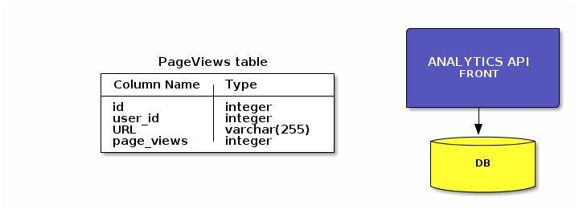
Queries
insert a pageview
update pageviews
top 100 URLs for a client
Insert pageviews

INSERT INTO PageViews VALUES
(1,1,"http://www.lesfurets.com/index.html",1);
INSERT INTO PageViews VALUES
(2,2,"http://Website.com/base.html",1);
INSERT INTO PageViews VALUES
(3,1,"http://www.lesfurets.com/assurance-auto",1);Update pageviews
UPDATE PageViews SET page_views = page_views+1
WHERE user_id="1" AND URL="http://www.lesfurets.com/index.html";Top 100 URLs for a client
SELECT URL,page_views FROM PageViews
WHERE user_id='1'
ORDER BY page_views DESC LIMIT 100Production load

Timeouts
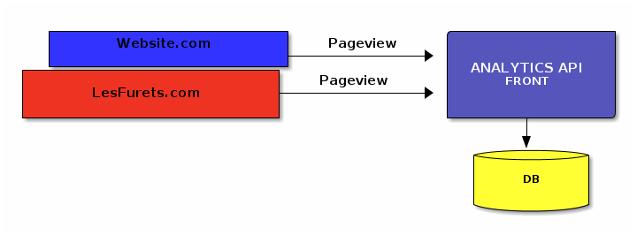
"Timeout error on inserting to the database"
Fix#1 Queuing
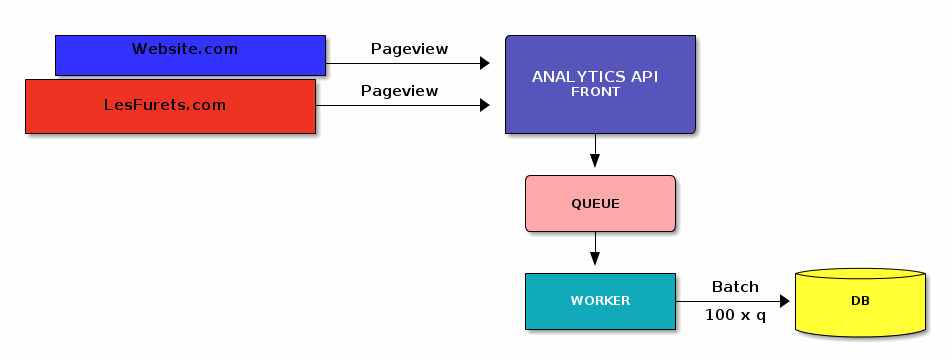
Fix#1 Queuing
Modify the application ⇒ batch 100 queries
Latency
Prone to failures
Still cannot handle high load
Fix#2 Sharding
Spread the load
use multiple database servers
spread the PageView table across the servers
mapping keys to shards using a hash function
Fix#2 Sharding

Fix#2 Sharding
Impacts
distribute the keys to the new servers
write to the "right" DB instance
agregate data from all the shards !
Sharding more and more
new shards to follow the load
repeat the last steps
Fix#2 Sharding
Server failures are more likely
WRITES: use a pending queue flushed less frequently
READS: a portion of the data is unavailable
⇒ replication
Fix#3 Replication
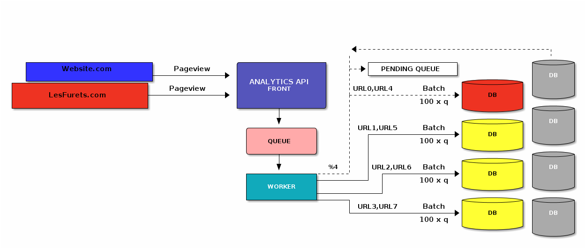
Human failures
Distribution hash function = %3
Data written to the wrong shards
redistribute data to the right shard
while still accepting queries ?!
Human failures
UPDATE PageView SET page_views = page_views + 2
WHERE user_id='42' AND URL='myurl';Increments the number of pageviews + 2
Human failures
UPDATE PageView SET page_views = page_views + 2
WHERE user_id='42' AND URL='myurl';Human failures
event logging
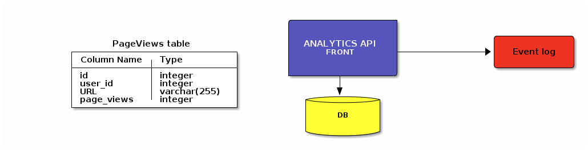
Human failures
Incremental data model

Human failures
Incremental data model ⇒ immutable data model

Human failures
incremental data model ⇒ data corruption
hard to correct
What went wrong?
do I build new features for customers?
or just dealing with reading/writting the data?
What went wrong?
a single server cannot take the load
solution / complexity
distributed storage
querying distributed data
built a data model that is not resilient
Wishlist 1 : Storage
We want a better* storage:
easy to add/remove nodes (scalling)
transparent data distribution (auto-sharding)
handle failures (auto-replication)
⇒ Distributed databases: Redis, Cassandra, MongoDB
Wishlist 2 : Queries
We want general pourpose distributed computing:
distributed queries + parallel processing
⇒ Distributed data processing engines : MapReduce, Spark
Wishlist 3 : Data model
We want a resiliant data model:
human error is unavoidable
an incremental data model is not resilient
⇒ Immutability
Plan
Intro
From SQL to NoSQL
Scalling a simple application
From relational to non-relational databases
Scalling MySQL : @LesFurets.com
PostgreSQL + TP
From relational to non-relational databases
RDBMs: the good parts
simple, proven model
45+ years of research
ACID
integration database (shared database pattern)
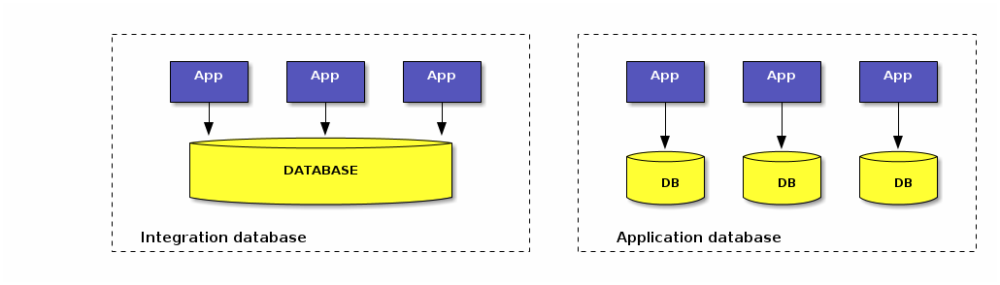
RDBMs: impedance missmatch (1)
Relational model: relations / tuples + normalisation (avoid duplication)
Memory: rich data structures !

RDBMs: impedance missmatch (2)
Memory: object graphs:
complex mapping from object to relations → ORMs
leads to performance issues
many rows/tables/JOINS
Schema evolution:
adding an attribute → adding a whole column
expensive locks → application downtime
RDBMs: impedance missmatch (3)
Relational model: relations / tuples + normalisation (avoid duplication)
Semi-structured data hard to model:
blob vs name/value (eg. XML)
RDBMs: scalling
Scalling is expensive:
scalling writes → (locking)
vertical/horizontal partitioning
Not a good fit for RDBMs
clustered databases ⇒ shared disk paradigm / cluster aware filesystem
application level sharding and replication
Not only SQL
2009, Johan Oskarson, #NoSQL meetup for distributed, open-source, non-relational databases
not using relational model SQL
run on clusters
ACID ⇒ tunnable consistency
fixed schema ⇒ flexible schema
polyglot persistance
SQL models tuples and joins
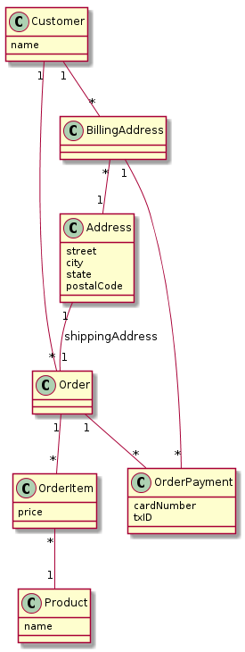
NoSQL models agregates
collection of related objects that should be treated as a unit (consistency / data management)
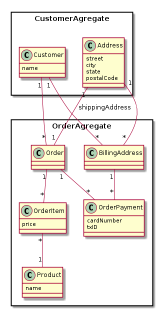
Modelling SQL vs NoSQL
SQL:
model first
1 model to guvern them all
NoSQL:
query first
1 data access pattern for each aggregate
NoSQL aggregate types
Key-value databases
Document-oriented databases
Column-oriented databases
Graph databases
Key-value databases
Store and retrieve Blobs based on a primary Key
HashTable model (K,V)
Simplest API that matches REST : PUT/GET/DELETE
Use cases: Session information, User profiles
Document oriented databases
Stores and retrieves documents/fragments (XML, JSON…)
"key-value stores where the value is queryable"
Documents:
self-describing, hierarchical tree data structures
maps, collections and scalar values
Use cases: Event logging, CMS, Product catalog
Column oriented databases
Stores data in column families as rows that have many columns associated to a row key
"Map of map model"

Use cases: Time series, Event logging, CMS, Counters
Graph databases
Stores entities and relations between entities
Query: traversal of the graph
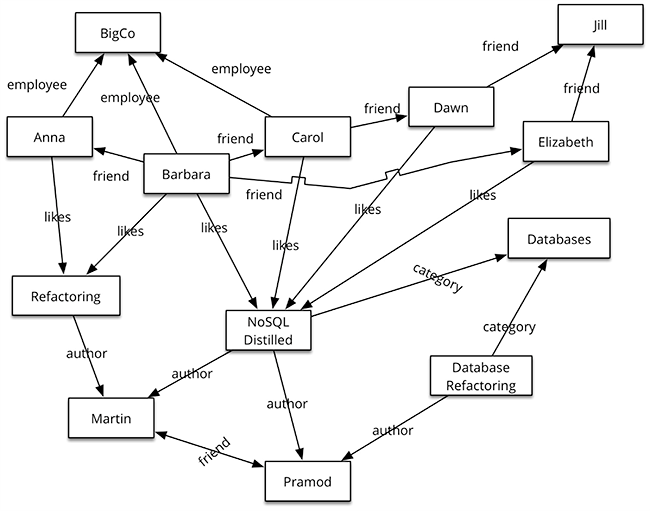
Use cases: Social networks, Recommendation engines
NoSQL not a panacea
Tradeoffs:
Hadoop: large scale batch computation but high latency
Cassandra: low latency, fin grain storage but limited data model
ACID ⇒ tunnable consistence (CAP)
Incremental architectures ⇒ human failures
Polyglot persistance
agregates have different requirements (availability/consistance/backup)
Mix and match relational and non-relational storages
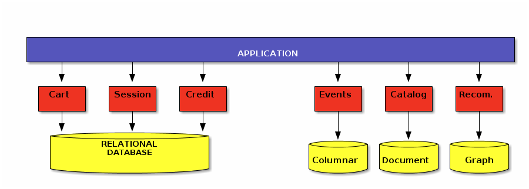
Lambda architecture
Combine the best of architectures to achieve
scalable systems with low latency
for arbitrary data problems
with human fault tolerance
and minimum complexity
Plan
Intro
From SQL to NoSQL
Scalling MySQL : @LesFurets.com
PostgreSQL + TP
LesFurets.com
Independent insurance agregator
Persistance:
replicated MySQL database
Cassandra / Spark (migration ongoing)
BI/reporting
Olap (JasperReports)
QlikView dashboarding
MySQL @LesFurets
MySQL specific workload
few updates
few synchronous queries
applicative caches
Polyglot persistance
SQL
XML - blob (MySQL) and file (NFS)
ElasticSearch - centralized logging
Cassandra/Spark
Data workflow

Architecture

MySQL scale-out

MySQL scale-out
MySQL replication
Master-slave : writes/updates only on master
one-way (asynchronous) replication
SBR (statement based replication)
RBR (row base replication)
DRBD mirroring between two masters
[MySQL Cluster]
SBR
send the queries to the slave
not all queries are safe for replication
same query ⇒ different results (AUTOINCREMENT / TRIGGERS / TRANSACTIONS)
RBR
send all modified rows to the slave
safer but very costly
Master/Slave
Master/Slave + DRBD
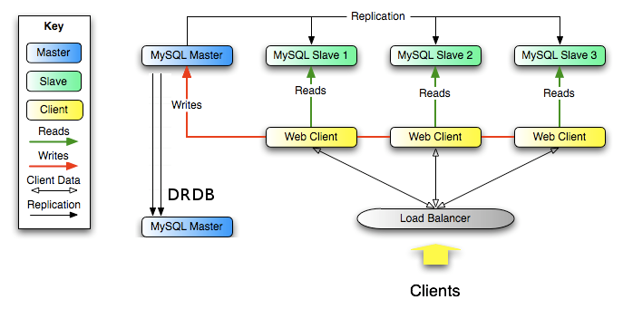
DRBD mirroring
mirroring a linux partition over IP (sync/async)
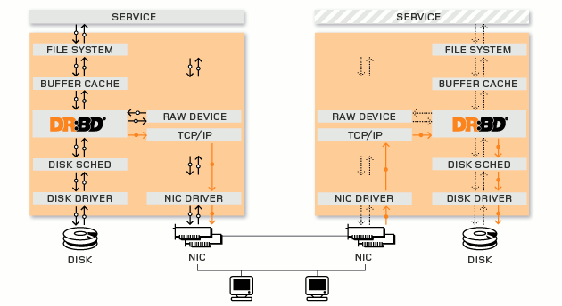
DRBD HA
heartbeat protocol monitors failures
triggers service switch via IPFOs
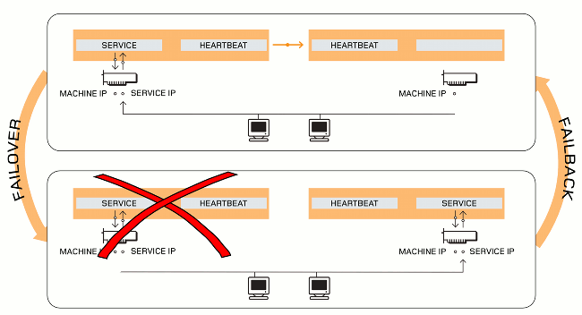
DRBD recovery
node(s) outage
background sync (most up-to date node if both were down)
replication network outage
automatic recovery
storage subsystem
mostly transparent
all network links
split brain! both nodes switched to the primary role while disconnected
Manual intervention needed
Current architecture problems
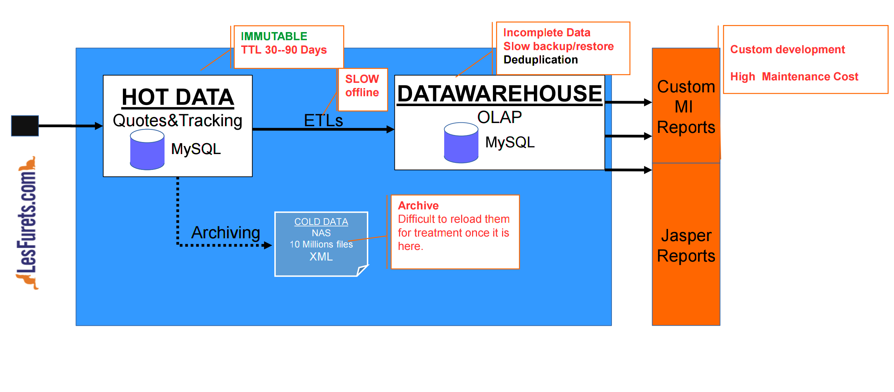
Concerns
Scale UP limits → Olap size
Scale OUT → replication and sharding
Replication incidents
DRDB split brain
broken replication: network incidents
MySQL replication ⇒ not guaranteed consistency:
slowly diverging Master/Slave
not automatic check/resynchronisation → costly automatic
problematic when failover switch
Lambda architecture
Combine best from No-SQL world to achieve
scalable systems
for arbitrary data problems
with human fault tolerance
and minimum complexity
Lambda architecture

On-going migration

On-going migration benefits

Plan
Intro
From SQL to NoSQL
Scalling MySQL : @LesFurets.com
PostgreSQL + TP
PostgreSQL
PostgreSQL
PostgreSQL
Berkeley : Ingres 1974
Extensions
custom data types / operators
natural-language parsing
multidimensional indexing
geographic queries
TP ⇒ PostgreSQL & extensions (tablefunc,dict_xsyn, fuzzystrmatch, pg_trgm, cube)
PostgreSQL offsprings
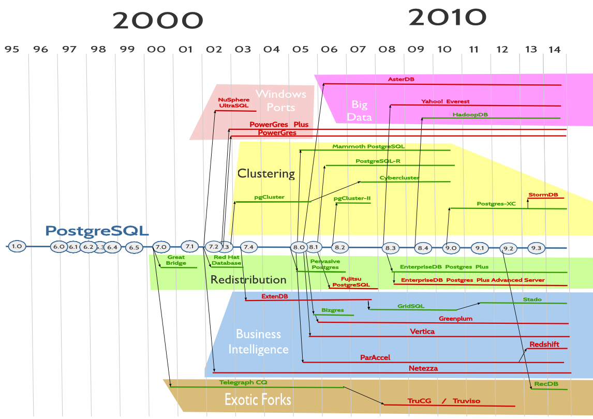
TP1: Installation de l’environnement
Démarrez l’application Virtualbox
Configurez un réseau host-only vboxnet0 (File/Preferences/Network puis voir image)
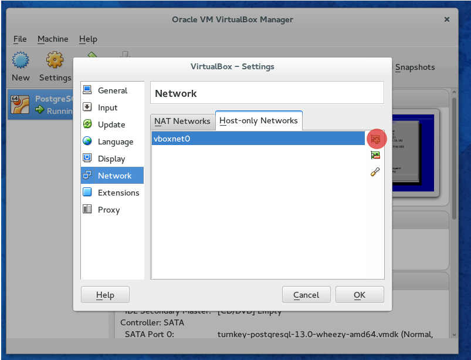
TP1: Installation de l’environnement
Importez et démarrez la VM
Accédez a l’interface web https://192.168.X.Y/ (voir la console de la VM)
Logins
PostgreSQL: postgres/bigdata14
(SSH: root/bigdata14)TP1: Recherche et recommandation
Moteur de recherche et recommandation des filmes:
recherche: textuelle, approximative, phonétique
moteur de recommandation très basique
TP1: Schéma (déjà créé)
CREATE TABLE genres (
name text UNIQUE,
position integer
);
CREATE TABLE movies (
movie_id SERIAL PRIMARY KEY,
title text,
genre cube
);
CREATE TABLE actors (
actor_id SERIAL PRIMARY KEY,
name text
);
CREATE TABLE movies_actors (
movie_id integer REFERENCES movies NOT NULL,
actor_id integer REFERENCES actors NOT NULL,
UNIQUE (movie_id, actor_id)
);CREATE INDEX movies_actors_movie_id ON movies_actors (movie_id);
CREATE INDEX movies_actors_actor_id ON movies_actors (actor_id);
CREATE INDEX movies_genres_cube ON movies USING gist (genre);TP1: Recherche
Recherche exacte / pattern matching
Distance de Levenshtein → typos simples
N-gram/similarité → trouver les erreurs modérées
Full text match @@ → similarité grammaticale
Métaphone → similarité phonétique
TP1: Recherche textuelle/patterns
Utilisez les opérateurs LIKE ou RegEX pour les requêtes suivantes:
Tous les filmes qui ont le mot stardust dans leur nom.
Compter tous les filmes dont le titre ne commence pas par le mot the
Tous les filmes qui ont le mot war dans le titre mais pas en dernière position
Afficher le plan d’exécution de la dernière requête(EXPLAIN).
TP1: Distance Levenshtein
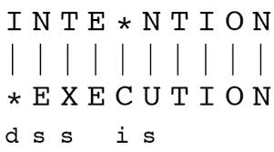
Opérations: Substitute, Insert, Delete
Distance Levenshtein : nb minimal d’opérations
TP1: Distance Levenshtein
Utilisez les fonctions du package fuzzystrgmatch pour trouver :
La distance levenshtein entre les mots execution et intention
Tous les films qui sont a une distance levenshtein inférieure a 9 de la chaine suivante: a hard day nght
TP1: N-gram

TP1: N-gram, similarity search

TP1: N-gram, similarity search (%)
Écrivez les requêtes pour trouver :
Tous les tri-grammes du mot Avatar
La similarité entre VOTKA et VODKA
Tous les filmes dont le titre est similaire a plus de 0.1% du titre Avatar .
TP1: Full text search
Trouver les filmes qui contiennent les formes grammaticales des mots 'night' et 'day':
(ignorer les mots de liaison/ pluriel/etc..)
Algorithme:
extraire les racine des mots (lexèmes) → spécifiques au langage !
comparer les vecteurs des lexèmes
TP1: Full text search
SELECT to_tsvector('A Hard Day''s Night'),
to_tsquery('english', 'night & day');
to_tsvector | to_tsquery
---------------------------+-----------------
'day':3 'hard':2 'night':5 | 'night' & 'day'tsvector : lexèmes :position
tsquery : lexèmes séparées par &
specifique au language !
Full text search
SELECT title
FROM movies
WHERE to_tsvector(title) @@ to_tsquery('english', 'night & day');SELECT title
FROM movies
WHERE title @@ 'night & day';
A Hard Day’s Night
Six Days Seven Nights
Long Day’s Journey Into NightTP1: Recherche phonétique
plusieurs fonctions pour la codification phonétique des mots
SELECT name, dmetaphone(name), dmetaphone_alt(name),
metaphone(name, 8), soundex(name)
FROM actors;
name | dmetaphone | dmetaphone_alt | metaphone | soundex
---------------+------------+----------------+-----------+--------
50 Cent | SNT | SNT | SNT | C530
Aaron Eckhart | ARNK | ARNK | ARNKHRT | A652
Agatha Hurle | AK0R | AKTR | AK0HRL | A236TP1: Recherche phonétique
Trouver les filmes qui ont des acteurs dont les noms se prononcent pareil.
Trouver les acteurs avec un nom similaire a Robin Wiliams, triés par similarité (combiner %, metaphone et levenshtein):
actor_id | name
----------+-----------------
4093 | Robin Williams
2442 | John Williams
4479 | Steven Williams
4090 | Robin ShouTP1: Search
Recherche exacte / pattern matching
Distance de Levenstein → typos simples
N-gram/similarite → trouver les erreurs modérées
Full text match @@ → similarité grammaticale
Métaphone → similarité phonétique
TP1: Recherche multi-dimensionnelle
CREATE TABLE movies (
movie_id SERIAL PRIMARY KEY,
title text,
genre cube (1)
);
INSERT INTO movies (movie_id,title,genre) VALUES
(1,'Star Wars',
'(0,7,0,0,0,0,0,0,0,7,0,0,0,0,10,0,0,0)') (2)
),on utilise le type cube <1> pour mapper les notes sur un vecteur n-dimensionnel de valeurs (= score du film <2>)
TP1: Recherche multi-dimensionnelle
les noms pour les dimensions sont définis dans la table genres
CREATE TABLE genres (
name text UNIQUE,
position integer
);
INSERT INTO genres (name,position) VALUES
('Action',1),
('Adventure',2),
('Animation',3),
...
('Sport',16),
('Thriller',17),
('Western',18);TP1: Recherche multi-dimensionnelle
Utiliser le module cube pour recommander des filmes similaires (du même genre)
Afficher les notes du film Star Wars
Quelle est la note du film Star Wars dans la catégorie 'Animation'
Afficher les films avec les meilleurs notes dans la catégorie SciFi
TP1: Recherche multi-dimensionnelle
Afficher les filmes similaire (cube_distance) a Star Wars (vecteur = (0, 7, 0, 0, 0, 0, 0, 0, 0, 7, 0, 0, 0, 0, 10, 0, 0, 0) ) du plus similaire au moins similaire
title | dist
-----------------------------------------------+------------------
Star Wars | 0
Star Wars: Episode V - The Empire Strikes Back | 2
Avatar | 5
Explorers | 5.74456264653803
Krull | 6.48074069840786
E.T. The Extra-Terrestrial | 7.61577310586391Écrivez une requête pour trouver les filmes qui sont a moins de 5 points de différence sur chaque dimension (utiliser cube_enlarge et @> ).
Annexe
TP1: Installation en détail
yum install postgresql postgresql-server postgresql-contrib (1)
postgresql-setup initdb (2)
systemctl start postgresql.service (3)
yum install pgadmin3 (4)
CREATE EXTENSION tablefunc; (5)
CREATE EXTENSION dict_xsyn;
CREATE EXTENSION fuzzystrmatch;
CREATE EXTENSION pg_trgm;
CREATE EXTENSION cube;| 1 | Instalation du client/serveur/extensions suplementaires |
| 2 | Initialisation de la base |
| 3 | Demarage du serveur |
| 4 | Front-end requetage |
| 5 | Installation des extensions Verifier les extensions installees |
PostgreSQL
CREATE INDEX [ nom ] ON table [ USING method ]
( { colonne | ( expression ) } [ classeop ] ... )method: btree/hash/gin/gist
classeop : operator class that can use the index
Ressources:
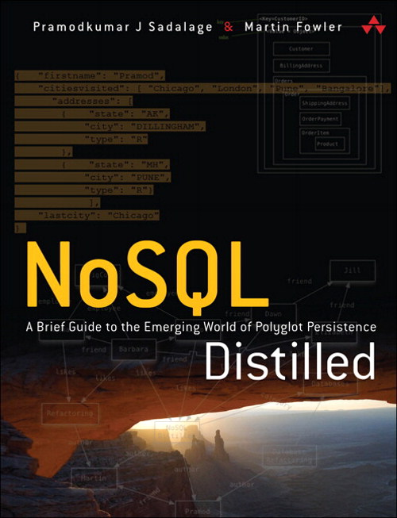